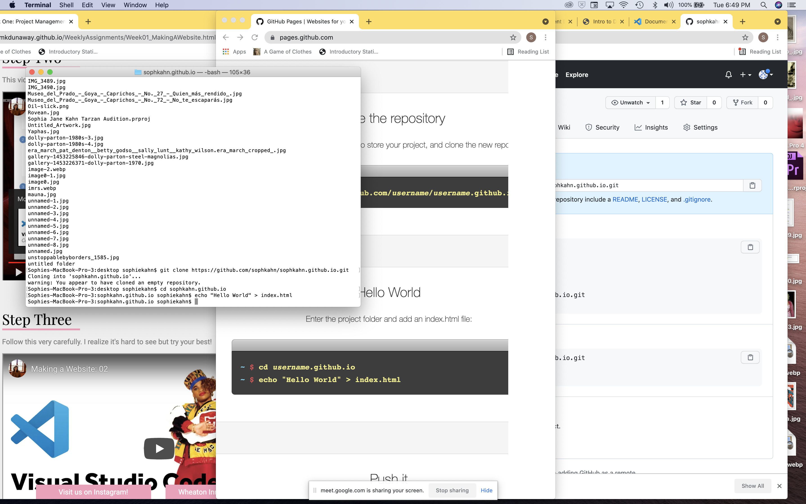
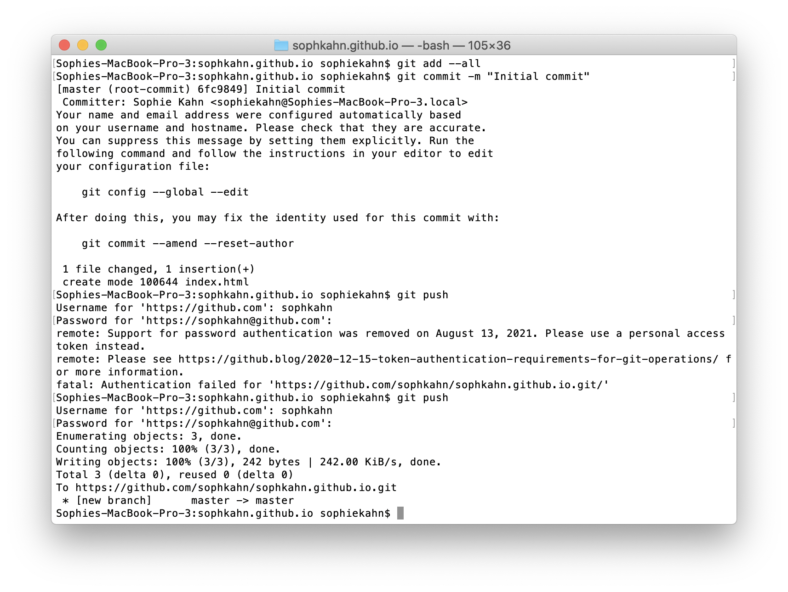
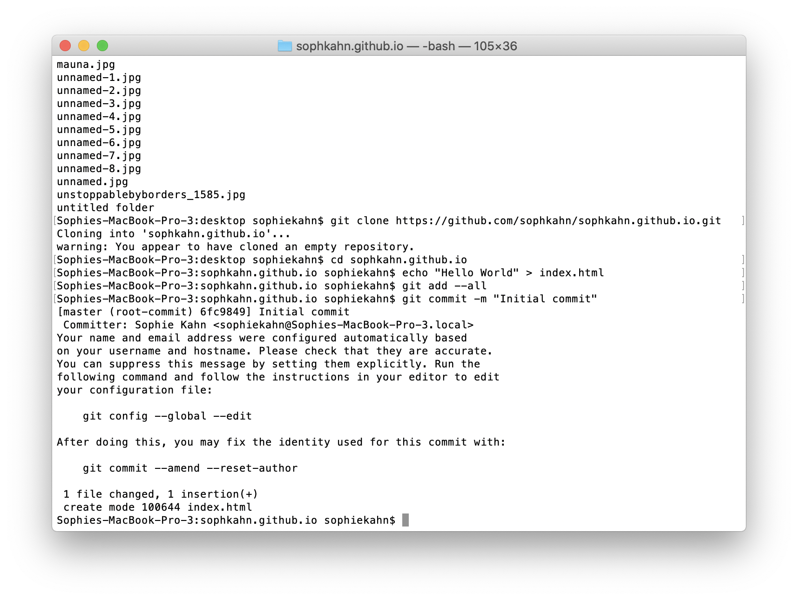
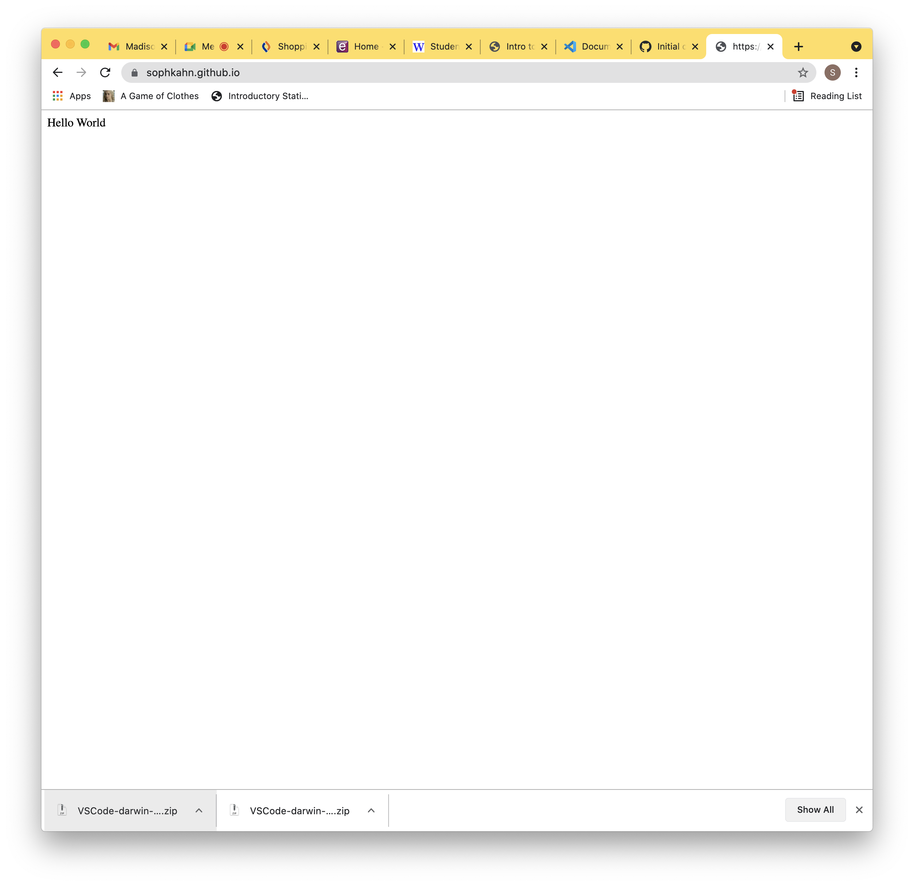
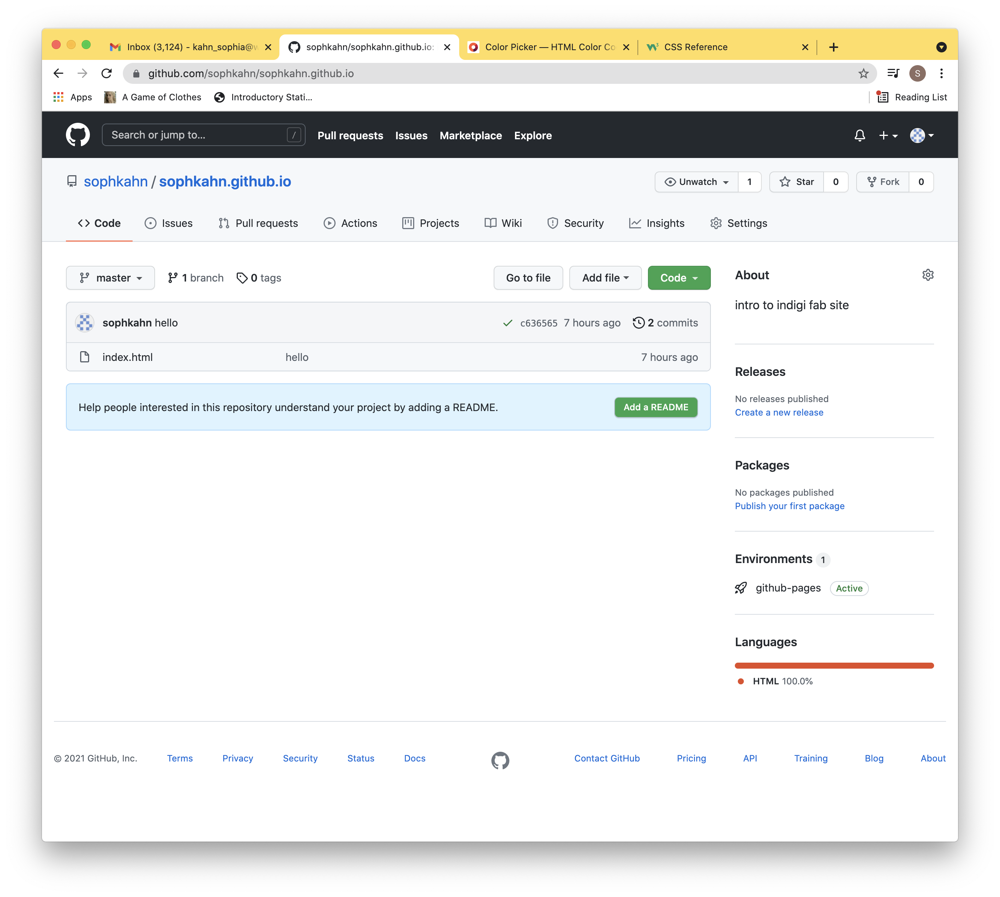
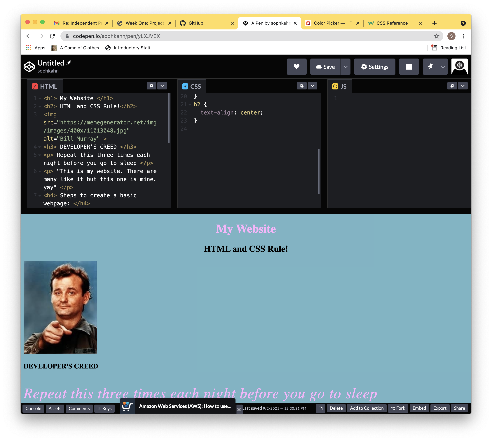
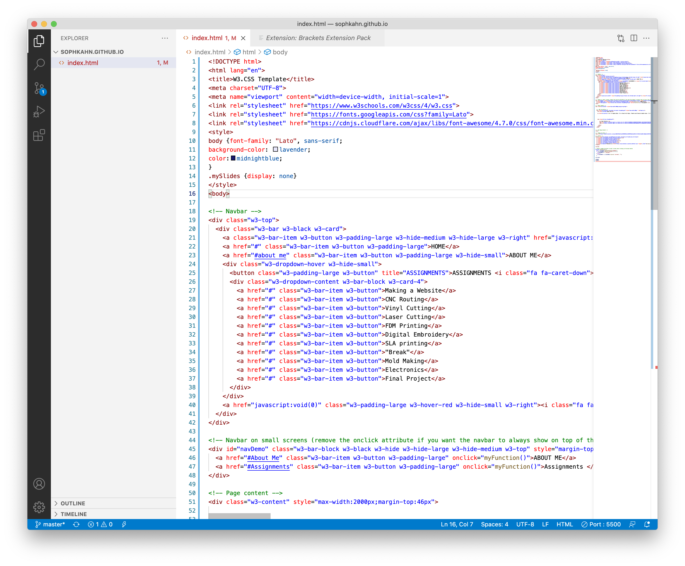
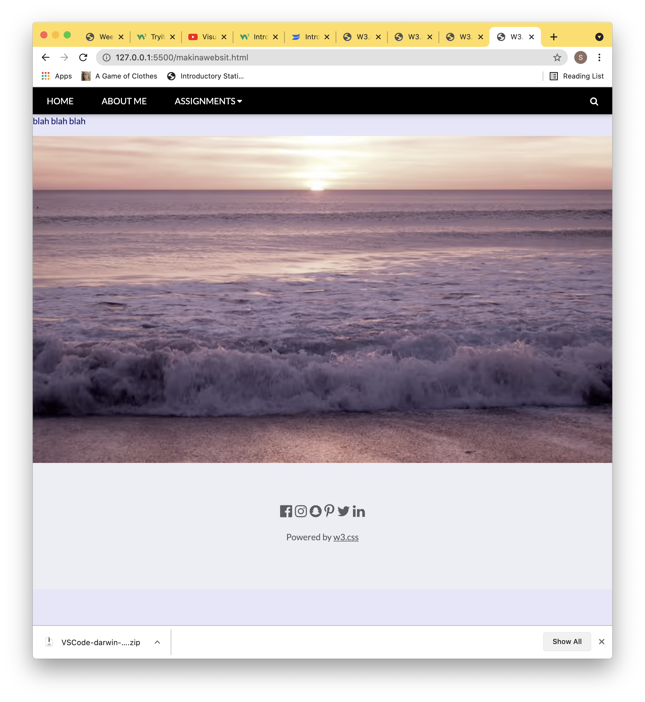
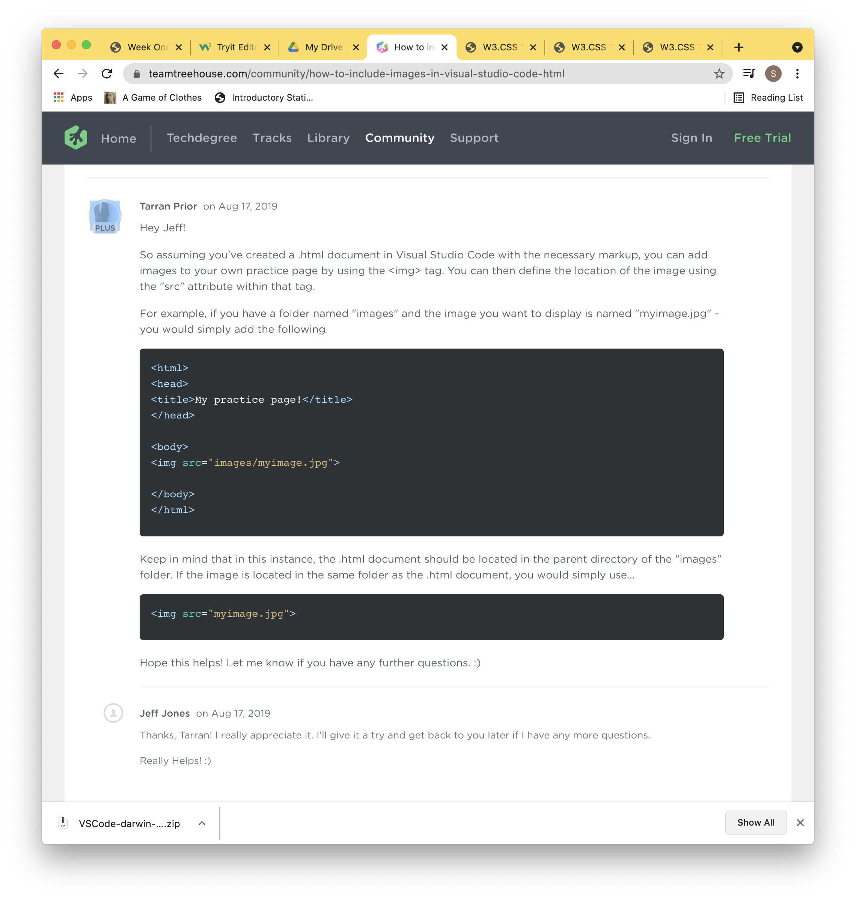
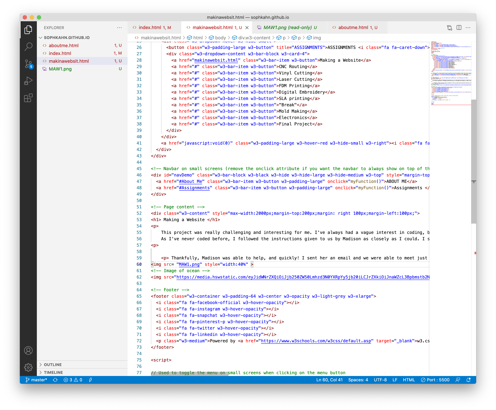

Making a Website
This project was really challenging and interesting for me. I've always had a vague interest in coding, but never had a way to start. This project was a really great introduction to basic coding and website making. As I've never coded before, I followed the instructions given to us by Madison as closely as I could. I started by downloading VSC and git - later I installed the Brackets Extension. While following through the steps, I quickly ran into some trouble.
Thankfully, Madison was able to help, and quickly! I sent her an email and we were able to meet just a few hours later. It turns out, I had entered "sophkahn.github.ioL" instead of "sophkahn.github.io"! A simple mistake, but one that made continuing impossible! After horrifying Madison with the amount of random files hanging around on my computer, I was on to the next step!
   This is when I learned what cloning is, as well as what pushing and pulling are. Cloning is when you make a copy of an existing repository - a stoarge location for files - and put it into a local repository and your working copy of the code. Pulling is you take the updated informtion in a remote repository and put it into your local repository/working copy of the code Pushing is when you send the code you've written to the remote repository. I definitely still am having trouble with these terms and getting them mixed up! I found a diagram online with little arrows that helped me visualize it! HTML is the language of coding that we're using to code! And Git is a tool used for creating and managing source code.
So, now I was moving on to step 3! I definitely had trouble figuring out how to work in VSC at first, but Tuna was able to meet with me and help! Though I was following the steps along with the video, once it came time to click on my repository, it wouldn't work! After looking through the code with Tuna, we noticed that I had put the index.html into the wrong folder on my computer. Once again, a small and silly mistake. Those are clearly the ones I have to look out for.
As I got to step 4, I was starting to get even more excited. I paged through the templates to get a good idea of how to format my website, and looked at the examples posted. As I'm someone who never coded before this class, once I looked through the templates, I watched the General Assembly coding video. It was very helpful. By the end, I was definitely getting more comfortable with html and with css
Now, it's pretty much go time. I watched the linked video on Step Six for extra information about VSC, then I was off. I chose to use the Band template from W3S, because it already had a navigation bar, with a drop down navigation bar, which I knew would be useful for listing the assignment pages. I edited the about me section, changed the titles of the buttons on the nav bar, added some pictures, and then . . . needed some more help. And what did I need help with? That dang nav bar. Despite adding all the sections for my drop down assignments button, they weren't showing up! Whitney helped me look through the template's code, and we found one "div" missing. Once I added that back in, it worked!
Whitney also helped me figure out just where to place the CSS commands! Now, I had to start the largest page of this project - this page! I copied the index.html code and popped it into a new page, before adding some text!
Then, I started typing this page! But - I quickly came to another issue. I had learned how to place images with URLs, and my screenshots for this project were NOT URLs! I actually came across this issue earlier when trying to put pictures into my about me section, but decided to scoot around it and use photos from my facebook. Alas, this was a problem that could no longer be skirted 'round. Instead of once again texting the Whatsapp group, I decided to try googling. And it worked!
 With that knowledge, I was able to finish typing up my project documentation. Now just to add in a few more pictures - non URL ones, then commit, and all done!
Thanks for reading!